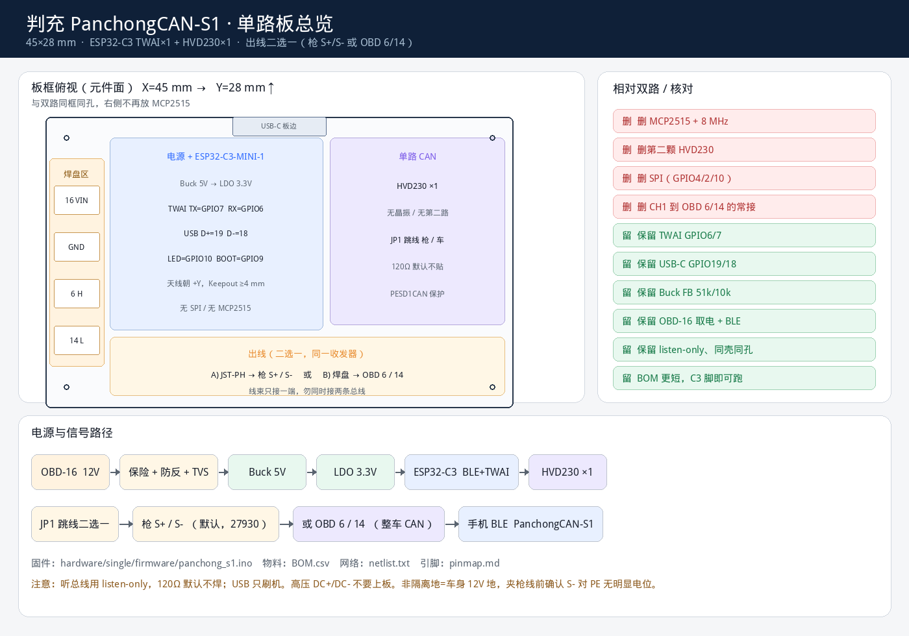
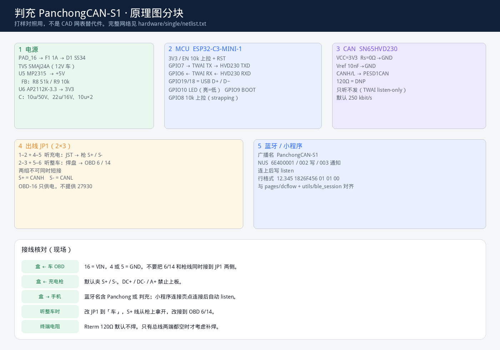

听充电（默认）
可改听整车
BLE Nordic UART
250 kbit/s listen-only
供电走 OBD-16，主数据在枪线，不在 OBD。跳线 JP1 二选一，不能同时接两条总线。 设计文件在 hardware/single/。
板框总览

原理图分块

主料
| 位号 | 料 | 做什么 |
|---|---|---|
| U1 | ESP32-C3-MINI-1-N4 | BLE + TWAI |
| U2 | SN65HVD230 | 一路 CAN |
| U5 | MP2315 51k/10k | 12V→5V |
| U6 | AP2112K-3.3 | 5V→3.3V |
| JP1 | 2×3 跳线 | 枪 / 车 |
和手机
| 广播名 | PanchongCAN-S1 |
| Service | 6E400001-…CCA9E |
| 命令 | listen |
| 行格式 | 12.345 1826F456 01 01 00 |
| 固件 | firmware/panchong_s1.ino |
现场接法
OBD-16 / 4(5) → 盒供电 枪 S+ / S- → JST（JP1 打在「枪」，默认） 手机蓝牙 → 连接页自动 listen 若改听整车：JP1 打到「车」，6/14 上焊盘，枪线拿开。
高压 DC+/DC-、A+ 不要上板。120Ω 默认不焊。非隔离地 = 车身 12V 地。